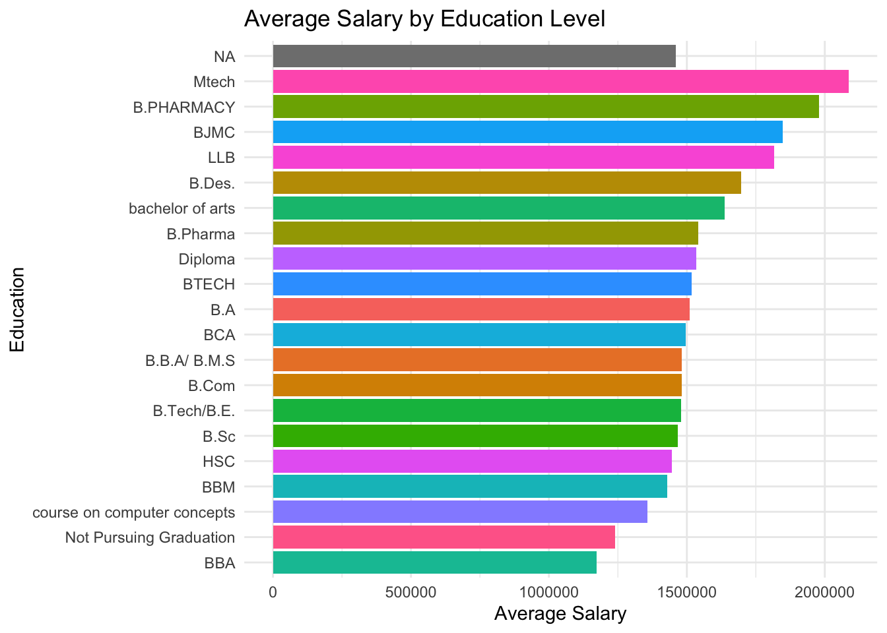
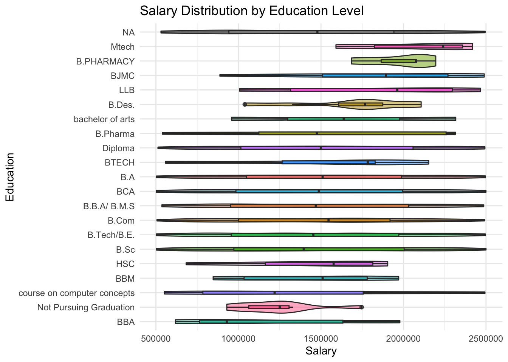
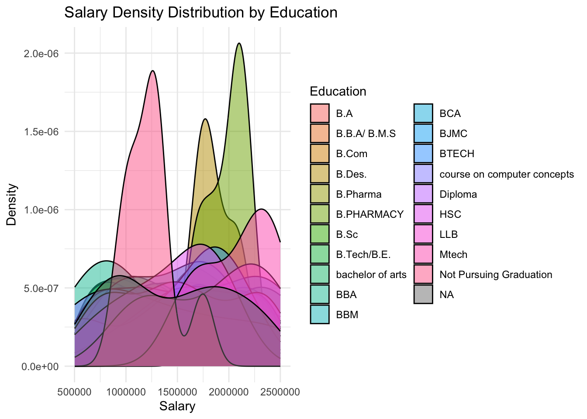
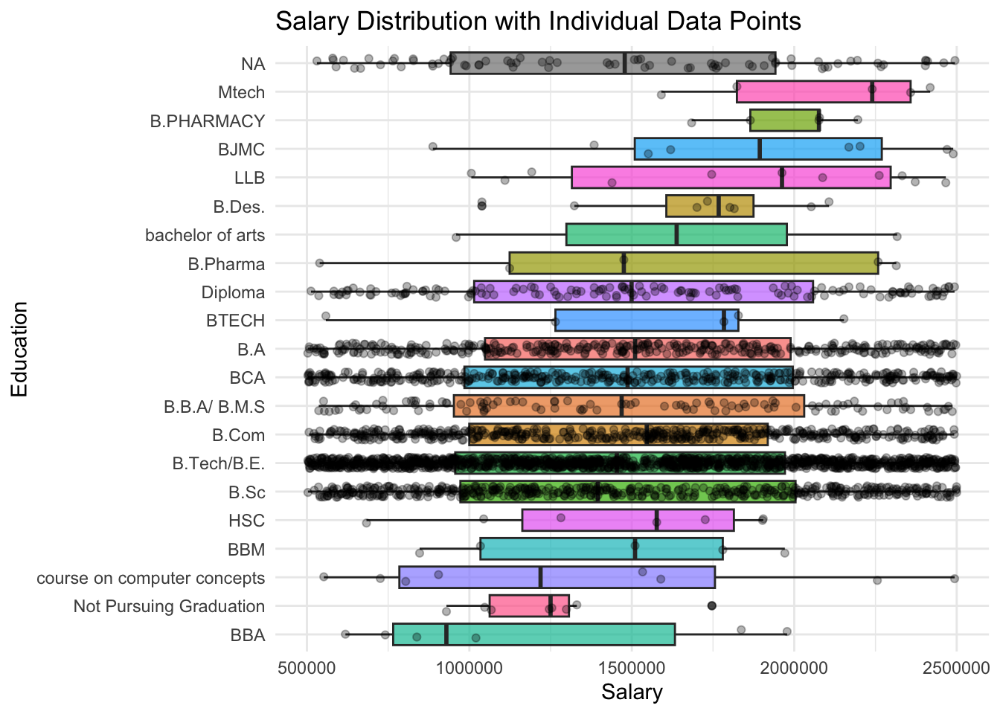
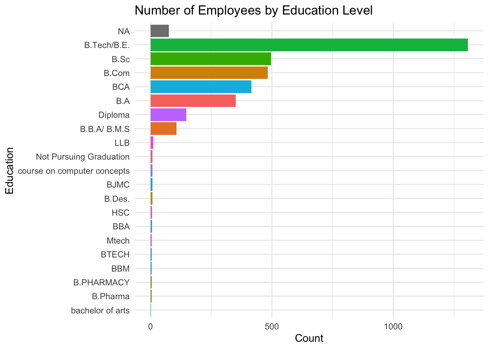

# Load required libraries
library(ggplot2)
library(dplyr)
Attaching package: 'dplyr'The following objects are masked from 'package:stats':
filter, lagThe following objects are masked from 'package:base':
intersect, setdiff, setequal, union# Assuming your data is in a CSV file named 'position_salary'
# Read the data
library(readr)
data <- read_csv("position_salary.csv")Rows: 3467 Columns: 6── Column specification ────────────────────────────────────────────────────────
Delimiter: ","
chr (4): Position, Location, Gender, Education
dbl (2): Experience (Years), Salary
ℹ Use `spec()` to retrieve the full column specification for this data.
ℹ Specify the column types or set `show_col_types = FALSE` to quiet this message.ggplot(data %>%
group_by(Education) %>%
summarise(avg_salary = mean(Salary)),
aes(x = reorder(Education, avg_salary), y = avg_salary, fill = Education)) +
geom_bar(stat = "identity") +
coord_flip() +
theme_minimal() +
labs(title = "Average Salary by Education Level",
x = "Education",
y = "Average Salary") +
theme(legend.position = "none")
# 2. Violin plot with box plot overlay
ggplot(data, aes(x = reorder(Education, Salary), y = Salary, fill = Education)) +
geom_violin(alpha = 0.5) +
geom_boxplot(width = 0.2, alpha = 0.8) +
coord_flip() +
theme_minimal() +
labs(title = "Salary Distribution by Education Level",
x = "Education",
y = "Salary") +
theme(legend.position = "none")
# 3. Density plot by education
ggplot(data, aes(x = Salary, fill = Education)) +
geom_density(alpha = 0.5) +
theme_minimal() +
labs(title = "Salary Density Distribution by Education",
x = "Salary",
y = "Density")
# 4. Create a summary table
summary_stats <- data %>%
group_by(Education) %>%
summarise(
Count = n(),
Mean_Salary = mean(Salary),
Median_Salary = median(Salary),
Min_Salary = min(Salary),
Max_Salary = max(Salary),
SD_Salary = sd(Salary)
) %>%
arrange(desc(Mean_Salary))
print(summary_stats)# A tibble: 21 × 7
Education Count Mean_Salary Median_Salary Min_Salary Max_Salary SD_Salary
<chr> <int> <dbl> <dbl> <dbl> <dbl> <dbl>
1 Mtech 5 2086150. 2239942 1590856 2418385 361369.
2 B.PHARMACY 5 1979655. 2076047 1684091 2195626 203780.
3 BJMC 8 1846517. 1893824 887682 2489343 573794.
4 LLB 11 1815877. 1962283 1006036 2466419 546251.
5 B.Des. 8 1696488. 1767394. 1038609 2107011 357341.
6 bachelor of … 2 1637977 1637977 959279 2316675 959824.
7 B.Pharma 5 1542135. 1475416 539149 2314053 757287.
8 Diploma 147 1534798. 1499244 512503 2493345 597248.
9 BTECH 5 1517533 1783567 558228 2152921 623500.
10 B.A 351 1510029. 1510050 502689 2497196 576255.
# ℹ 11 more rows# 5. Box plot with individual points
ggplot(data, aes(x = reorder(Education, Salary), y = Salary, fill = Education)) +
geom_boxplot(alpha = 0.7) +
geom_jitter(width = 0.2, alpha = 0.3) +
coord_flip() +
theme_minimal() +
labs(title = "Salary Distribution with Individual Data Points",
x = "Education",
y = "Salary") +
theme(legend.position = "none")
# 6. Bar chart showing count of employees by education
ggplot(data, aes(x = reorder(Education, Education, FUN = length), fill = Education)) +
geom_bar() +
coord_flip() +
theme_minimal() +
labs(title = "Number of Employees by Education Level",
x = "Education",
y = "Count") +
theme(legend.position = "none")
# Perform statistical test
# ANOVA test to check if differences are significant
anova_result <- aov(Salary ~ Education, data = data)
print(summary(anova_result)) Df Sum Sq Mean Sq F value Pr(>F)
Education 19 7.762e+12 4.085e+11 1.226 0.226
Residuals 3371 1.123e+15 3.333e+11
76 observations deleted due to missingness